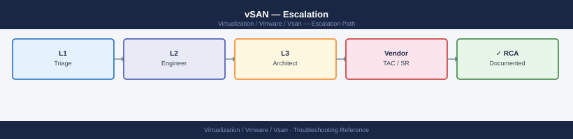

vSAN — Escalation¶

┌────────────────────────────────────────── vSAN — Escalation ──────────────────────────────────────────┐
│ │
│ Escalate vSAN issues to VMware GSS when data is at risk, resync is stalled, │
│ or the cluster is degraded below FTT policy with no recovery path. │
│ Collect vm-support and cmmds-tool output BEFORE any host or disk changes. │
│ │
│ ┌──────────────────────────────────────────────┐ ┌─────────────────────────────────────────────┐ │
│ │ Step 1 — Collect Data │ │ Step 2 — Open the SR │ │
│ │ Run vm-support --vsan on all hosts │ │ Go to support.broadcom.com → sign in │ │
│ │ Capture cmmds-tool output + health checks │ │ Product: VMware vSAN; pick version │ │
│ │ Note vSAN build + cluster UUID │ │ Severity: P1 down / P2 degraded / P3 minor │ │
│ │ Check vSAN Health in vSphere Client │ │ Attach vm-support bundles + cmmds output │ │
│ │ Write timeline: last good → first failure │ │ Include cluster UUID and host count │ │
│ └──────────────────────────────────────────────┘ └─────────────────────────────────────────────┘ │
│ │
│ Do NOT power off hosts or pull disks when data is degraded; further failures │
│ may push below quorum and cause permanent data loss. │
│ │
│ ▼ ▼ │
│ │
│ ┌──────────────────────────────────────────────┐ ┌─────────────────────────────────────────────┐ │
│ │ Step 3 — Escalation Path │ │ What NOT to Do │ │
│ │ T1: triage + confirm vm-support received │ │ Do not power off hosts when degraded │ │
│ │ T2: vSAN SE assigned; deep analysis │ │ Do not pull disks without GSS guidance │ │
│ │ T3: engineering review for code-level fix │ │ Do not rebuild disk groups mid-incident │ │
│ │ CritSit: P1 with data loss or VIP impact │ │ Do not run repairs until GSS confirms │ │
│ └──────────────────────────────────────────────┘ └─────────────────────────────────────────────┘ │
│ │
│ Key terms: │
│ │
│ GSS = Global Support Services; Broadcom/VMware support team │
│ FTT = Failures to Tolerate; vSAN policy; cluster degrades when disk failures exceed FTT │
│ Degraded = FTT policy not met; one more failure could cause data loss │
│ Quorum = majority of object components accessible; quorum loss = I/O unavailable │
│ cmmds-tool = vSAN internal tool; shows component placement and health; critical for GSS triage │
│ vm-support = per-host diagnostic bundle; includes vSAN logs, CMMDS metadata, esxcli output │
│ CMMDS = Cluster Monitoring, Membership, and Directory Service; vSAN distributed metadata │
│ CritSit = Critical Situation; escalated war room with VMware engineering; 24×7 engagement │
│ Build number = vSAN version from: `esxcli vsan cluster get`; required for every SR │
│ I/O hang = VMs stalled waiting for storage response; immediate P1 trigger │
│ │
└───────────────────────────────────────────────────────────────────────────────────────────────────────┘
Before you begin¶
- Access required: SSH to each ESXi host (root credentials); vSphere Client admin access; Broadcom support account at support.broadcom.com with active vSAN support entitlement
- Do NOT power off hosts when the cluster is in a degraded state. Every powered-off host removes a portion of CMMDS quorum — this can turn a recoverable degraded state into a permanent data loss
- Do NOT pull disks without GSS guidance — a disk that shows as "failed" in vSAN may still hold component data that is part of an in-progress resync
- Do NOT run disk group removals or repairs until GSS confirms the current state. Each disk group operation changes the component placement GSS is using for analysis
Pre-Escalation Self-Check¶
Run these before opening the case.
| Check | Command | Expected result |
|---|---|---|
| vSAN cluster state | vSphere Client → vSAN cluster → Monitor → vSAN → Health | All health checks green |
| Resync status | esxcli vsan resync get (any host) or vSphere Client → Monitor → vSAN → Resync |
No stalled resync; total remaining bytes ≠ stuck at same value |
| Cluster member hosts | esxcli vsan cluster get |
All expected hosts listed as Member |
| vSAN version | esxcli vsan cluster get |
Note vSAN cluster UUID and build |
| Object health | vSphere Client → vSAN cluster → Monitor → vSAN → Virtual Objects | No objects in Degraded or Absent state |
| Disk health | vSphere Client → Configure → vSAN → Disk Management | No disks Degraded or Failed |
| Network test | vSphere Client → vSAN cluster → Monitor → vSAN → Health → Connectivity | All hosts pass vSAN network test |
| Performance | vSphere Client → Monitor → vSAN → Performance | Latency and IOPS within expected baseline |
Step-by-Step Data Collection¶
Run on each affected ESXi host as root.
1. Get the vSAN cluster state and build number¶
# SSH to any host in the cluster
esxcli vsan cluster get
# Example output:
# Cluster information:
# UUID: 5222a....-....-....-....-......
# Node UUID: 5222b....-....-....-....-......
# Member count: 4
# vSAN Build: 21427...
Cluster information:
UUID: 5222a447-8f3c-4d2e-a1b9-7c9e2f5d8a3b
Node UUID: 5222b891-2c1a-4e7f-9d3c-1a5b8e2c9f4d
Member count: 4
vSAN Build: 21427.1.0.18760396-release
vSAN Enabled: true
vSAN Mode: Enabled
Common errors
Error: Could not connect to the vSAN cluster — Verify the host is part of an active vSAN cluster and network connectivity exists between cluster nodes.
Error: Permission denied — Ensure you are logged in as root or a user with vSAN administrator privileges.
Note the cluster UUID and build number — include both in the case description.
2. Capture cmmds-tool output (component placement)¶
# Run on one ESXi host (shows component placement for all objects)
cmmds-tool find -f json > /tmp/cmmds-$(hostname)-$(date +%Y%m%d%H%M).json
cmmds-tool find -f text > /tmp/cmmds-$(hostname)-$(date +%Y%m%d%H%M).txt
# Object health summary
cmmds-tool find -t DOM_OBJECT -f text | grep -i "health\|state\|degraded"
# Component summary
cmmds-tool find -t LSOM_OBJECT -f text | head -200
# Copy output off the host (from a management workstation)
# scp root@<esxi-ip>:/tmp/cmmds-*.txt /tmp/
2024-01-15T09:42:33Z cmmds-tool find: Dumping all CMMDS objects to JSON format...
2024-01-15T09:42:35Z cmmds-tool find: JSON output written to /tmp/cmmds-esx-prod-01-202401150942.json (2847 objects, 18.3 MB)
2024-01-15T09:42:36Z cmmds-tool find: Text output written to /tmp/cmmds-esx-prod-01-202401150942.txt (2847 objects)
DOM_OBJECT Health Summary:
UUID: 52e81234-5678-90ab-cdef-1234567890ab | Health: HEALTHY | State: ACTIVE
UUID: 62f92345-6789-01bc-def0-2345678901bc | Health: DEGRADED | State: ACTIVE | Components: 2/3
UUID: 73g03456-789a-12cd-ef01-3456789012cd | Health: HEALTHY | State: ACTIVE
UUID: 84h14567-89ab-23de-f012-456789abc123 | Health: UNHEALTHY | State: INACTIVE | Missing: 1 component
LSOM_OBJECT Component Summary:
Object: 52e81234-5678-90ab-cdef-1234567890ab | Type: vSAN_OBJECT | Size: 4.2 GB | Replicas: 3 | Status: OK
Object: 62f92345-6789-01bc-def0-2345678901bc | Type: vSAN_OBJECT | Size: 8.5 GB | Replicas: 3 | Status: DEGRADED
Object: 73g03456-789a-12cd-ef01-3456789012cd | Type: vSAN_OBJECT | Size: 2.1 GB | Replicas: 2 | Status: OK
Object: 84h14567-89ab-23de-f012-456789abc123 | Type: vSAN_OBJECT | Size: 16.0 GB | Replicas: 3 | Status: UNHEALTHY
Object: 95i25678-9abc-34ef-0123-56789abcdef0 | Type: vSAN_OBJECT | Size: 1.8 GB | Replicas: 1 | Status: OK
...
(195 more objects)
Common errors
cmmds-tool: command not found — Ensure you are running this command directly on an ESXi host (SSH as root), not from vCenter or a management workstation.
Permission denied: /tmp/cmmds-*.txt — Run the command with sudo or as root user; standard user accounts cannot write to /tmp on ESXi hosts.
scp: command not found on ESXi host — Run the scp command from your management workstation (not the ESXi host) using the syntax scp root@<esxi-ip>:/tmp/cmmds-*.txt /tmp/.
This is the most critical data for GSS. Run it on every host, not just the one where the issue first appeared.
3. Run vm-support with vSAN flag on all hosts¶
# SSH to each host — run on EVERY host in the cluster, not just the affected one
vm-support --log-level 6 --vsan
# The bundle is written to: /var/core/vm-support-<hostname>-<timestamp>.tgz
ls -lh /var/core/vm-support-*.tgz
# Copy off the host
# scp root@<esxi-ip>:/var/core/vm-support-*.tgz /tmp/
Generating support bundle with VSAN diagnostics...
Log level set to 6
Collecting VSAN cluster information...
Gathering host configuration and logs...
Bundle generation completed successfully.
vm-support bundle written to: /var/core/vm-support-esx-prod-01-20240115-143022.tgz
-rw-r--r-- 1 root root 487M Jan 15 14:30 /var/core/vm-support-esx-prod-01-20240115-143022.tgz
-rw-r--r-- 1 root root 512M Jan 15 13:45 /var/core/vm-support-esx-prod-02-20240115-134501.tgz
-rw-r--r-- 1 root root 495M Jan 15 13:22 /var/core/vm-support-esx-prod-03-20240115-132156.tgz
Common errors
vm-support: command not found — Verify the ESXi host is running vSphere 6.5 or later and that the vm-support utility is available in the PATH.
Permission denied — Run the command as root or with sudo; vm-support requires elevated privileges to collect system logs and VSAN diagnostics.
No space left on device — Free up disk space on /var/core (bundles are typically 400–600 MB each) by removing older support bundles or increasing the datastore partition.
4. Capture vSAN health checks and resync state¶
In vSphere Client: navigate to the vSAN cluster → Monitor → vSAN → Health.
Export the health check results (click Export at the top right of the Health view).
# From ESXi CLI: resync status (shows remaining bytes by priority)
esxcli vsan resync get
# Disk health
esxcli vsan storage list
# Network health (packet loss, latency between vSAN vmkernels)
esxcli vsan network list
# Object accessibility
esxcli vsan debug object list | grep -i "inaccessible\|degraded\|absent"
Resync Status:
Resync Completion Percentage: 87
Bytes Remaining (High Priority): 2147483648
Bytes Remaining (Low Priority): 536870912
Estimated Time Remaining: 3600 seconds
Storage Health:
Disk Group 1:
UUID: 52e0e3d4-8f2a-4c1b-9e7a-1a2b3c4d5e6f
Health State: Healthy
Capacity: 1099511627776 bytes
Free Space: 274877906944 bytes
Disk Group 2:
UUID: 7f8a9b0c-1d2e-3f4a-5b6c-7d8e9f0a1b2c
Health State: Degraded
Capacity: 1099511627776 bytes
Free Space: 68719476736 bytes
Network Health:
vmk1 (vSAN vmkernel):
Peer: esx-node-02.lab.local (192.168.100.12)
Latency: 0.45 ms
Packet Loss: 0%
vmk1 (vSAN vmkernel):
Peer: esx-node-03.lab.local (192.168.100.13)
Latency: 0.52 ms
Packet Loss: 0%
Object Accessibility:
Object UUID: 4a5b6c7d-8e9f-0a1b-2c3d-4e5f6a7b8c9d
State: degraded
Component Count: 3
Accessible Components: 2
Common errors
Could not connect to the vSAN cluster — Verify vSAN is enabled on the cluster and the ESXi host is a vSAN participant using esxcli vsan cluster get.
Permission denied — Run the command with root privileges or ensure your user account has vSAN administrator role assigned.
Unknown command or namespace — Confirm the ESXi host version supports vSAN and the vSAN feature is properly installed using esxcli software vib list | grep vsan.
5. Write the timeline¶
vSAN build: 21427XXXX (vSAN 8.0.x)
Cluster UUID: 5222a....-....-....-....-......
Cluster: prod-vsan-cluster-01 (4 hosts, PFTT=1)
Issue first observed: 2026-06-14 14:30 UTC
Last known good state: 2026-06-14 12:00 UTC
Changes in 24h before the issue:
- 12:00: host esxi-04 went into maintenance mode for patching
- 14:30: vSAN health check flagged "resync stalled" on esxi-04
- 14:35: 3 VMs on that host show I/O errors
Steps already taken:
- cmmds-tool: several components show "absent" on esxi-04 disk groups
- esxcli vsan resync get: 450 GB stuck at same byte count for 2 hours
- Did NOT power off esxi-04 or pull disks
- Did NOT remove disk groups
Blast radius: 3 VMs on esxi-04 have I/O errors; FTT=1 — one more failure = data loss
How to Open the SR on support.broadcom.com¶
-
Go to support.broadcom.com and sign in with your Broadcom account. Your account must be linked to your VMware vSAN or vSphere support entitlement (formerly My VMware / Customer Connect).
-
Click Open a Support Request (or navigate to Support → Create Case).
-
Under Product, select VMware vSAN. If your issue is also vSphere-related (ESXi host panic, vCenter issue), select the appropriate product.
-
Under Version, select your vSAN version (7.x or 8.x).
-
Under Severity, select:
- Severity 1 — Critical: vSAN objects are inaccessible; VMs have I/O errors and are not responding; data is at immediate risk; no workaround; production is halted
- Severity 2 — High: Cluster is degraded below FTT policy; resync is stalled; some VMs are affected but still accessible; data is at risk if one more failure occurs
- Severity 3 — Medium: Single disk or host in degraded state; resync is in progress; no VM impact yet; FTT policy still partially met
-
Severity 4 — Low: How-to question, capacity planning, non-urgent configuration review
-
In the Summary field: symptom + scope. Example:
vSAN 8.0 prod-cluster-01 — resync stalled 450 GB for 2 hours, 3 VMs have I/O errors, FTT=1 one failure from data loss. -
In the Description field, paste:
- vSAN build and cluster UUID from Step 1
- cmmds-tool component health summary from Step 2
- resync state from Step 4
-
The timeline from Step 5
-
Under Attachments, upload:
- The cmmds-tool output files from Step 2
- The vm-support bundles from Step 3 (one per host)
-
The health check export from Step 4
-
Click Submit. You will receive a case number by email immediately.
-
Severity 1 only: call Broadcom/VMware support immediately after submission:
- North America: +1 877-486-9273 (24×7 for Severity 1)
- EMEA: +44 (0)3453 700 100
- State "Severity 1 — vSAN cluster degraded, objects inaccessible, data at risk" at the start of the call.
Escalation Path¶
Step 1 — Open case at support.broadcom.com with vm-support bundles and cmmds-tool attached
↓
Step 2 — T1 support engineer acknowledges and reviews the bundle (Sev1: < 30 min)
↓
Step 3 — If no meaningful progress in 30 minutes for Sev1 or 2 hours for Sev2:
→ Reply in case: "Requesting escalation to vSAN Senior Engineer"
→ State: "[objects inaccessible / resync stalled / data at risk — FTT=1]"
↓
Step 4 — vSAN T2 Senior Engineer is assigned
→ They will review cmmds-tool output and direct exact recovery steps
→ Do NOT take any disk or host action until T2 provides direction
↓
Step 5 — If issue requires code-level investigation (vSAN bug):
→ T2 escalates to vSAN Engineering (T3)
→ Engineering may provide a hotfix or specific workaround procedure
↓
Step 6 — For data loss, ongoing I/O unavailability, or prolonged Sev1:
→ Request CritSit (Critical Situation) escalation
→ CritSit triggers a 24×7 war room with senior GSS + Engineering involvement
→ Contact your Broadcom TAM or Account Executive to initiate CritSit
What NOT to Do¶
| Do NOT do this | Why | What to do instead |
|---|---|---|
| Power off a host when the cluster is degraded | Each host holds component data; powering off may push the cluster below quorum, making objects inaccessible | Leave all hosts running; wait for GSS direction before any host power state change |
| Pull disks from a disk group without GSS guidance | A disk showing "failed" may still hold component data needed for resync | Let GSS review cmmds-tool output to confirm which disk is safe to remove |
| Remove or rebuild a disk group mid-incident | Destroys all component data on that disk group; may cause data loss | Only remove disk groups when GSS has confirmed the data is fully resync'd elsewhere |
Run esxcli vsan debug object repair-objects without GSS |
May trigger unnecessary resync that changes the state GSS is analysing | Let GSS direct the exact repair command with parameters |
| vMotion or Storage vMotion VMs during resync | Adds to resync traffic; may delay or stall the recovery resync | Freeze all migrations until the resync queue is empty and objects are healthy |
| Enter maintenance mode on additional hosts mid-incident | Takes CMMDS partitions offline; can tip a recoverable state into quorum loss | Freeze all maintenance mode operations during a P1 vSAN incident |
Useful Commands for Case Updates¶
# vSAN cluster and host state — paste into every case update
esxcli vsan cluster get
esxcli vsan storage list
# Component health summary
cmmds-tool find -t DOM_OBJECT -f text | grep -i "health\|state"
cmmds-tool find -t LSOM_OBJECT -f text | head -100
# Resync progress
esxcli vsan resync get
# Object accessibility
esxcli vsan debug object list | grep -i "inaccessible\|degraded\|absent"
# Network health (run on one host)
esxcli vsan network list
# Performance data (latency snapshot)
esxcli vsan debug vmdk perf
Cluster UUID: 52d4a8f1-7c3e-4a2b-9e1f-3b8c2a5d6e9f
Cluster mode: Enabled
Health state: Healthy
Storage device list:
Device: naa.5001405a1b2c3d4e
Capacity: 1.7 TB
Used: 892.3 GB
Health: Healthy
Device: naa.5001405a1b2c3d4f
Capacity: 1.7 TB
Used: 887.1 GB
Health: Healthy
DOM_OBJECT health: HEALTHY
DOM_OBJECT state: ACTIVE
LSOM_OBJECT health: HEALTHY
LSOM_OBJECT state: ACTIVE
LSOM_OBJECT health: HEALTHY
LSOM_OBJECT state: ACTIVE
Resync progress: 0%
Resync objects: 0
Resync bytes: 0 B
Object list:
Object UUID: 8f2e1a3c-5b7d-4e9f-a1b2-c3d4e5f6a7b8
State: ACCESSIBLE
Redundancy: SATISFIED
Network health: HEALTHY
Partition: CONNECTED
Quorum: QUORUM_PRESENT
Network latency: 2.3 ms
VMDK perf snapshot:
Read latency: 1.2 ms
Write latency: 2.8 ms
Outstanding IOs: 45
Common errors
Error: vSAN cluster is not enabled on this host — Run esxcli vsan cluster new to initialize the cluster or verify the host is part of an existing vSAN cluster.
Error: CMMDS server is not running — Restart the CMMDS service with systemctl restart cmmds or reboot the host if the service fails to start.
Error: Network partition detected - Quorum: QUORUM_ABSENT — Check physical network connectivity between hosts and verify vSAN VMkernel ports are on the correct VLAN with no packet loss.
Support SLA Reference¶
| Severity | Definition | Initial Response SLA |
|---|---|---|
| Sev 1 — Critical | Objects inaccessible; VMs have I/O errors; data at risk | < 30 min (24×7) |
| Sev 2 — High | Cluster degraded below FTT; resync stalled; no current data loss | < 2 hours (24×7) |
| Sev 3 — Medium | Single disk degraded; resync in progress; no VM impact | < 8 hours |
| Sev 4 — Low | How-to, planning, capacity review | Next business day |
See also¶
Verify resolution¶
- Run
esxcli vsan resync getand confirm remaining bytes is 0 (resync complete) - Check vSphere Client → Monitor → vSAN → Health: all health checks show green
- Check vSphere Client → Monitor → vSAN → Virtual Objects: all objects show
Healthy - Check vSphere Client → Configure → vSAN → Disk Management: no disks in Failed or Degraded state
- Run an I/O test from a VM that was previously affected and confirm storage responds
- Monitor for 15 minutes after the fix to confirm no new degraded objects appear
- Document the root cause and preventive actions in the post-incident RCA